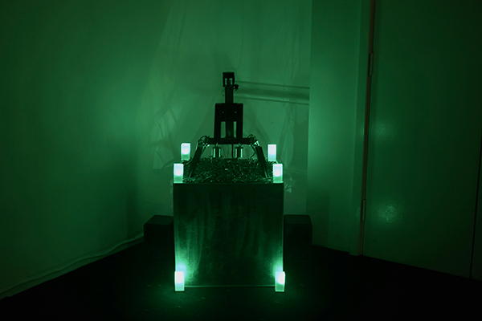

In this work, mechanical systems persist in their steady motions, echoing the "lights-out" factories — almost fully automated — where machines operate without human presence. The installation imagines an automated space that maintains its own rhythms, cycles of movement, pause, and sound, like a body continuing to breathe in the dark. It reflects on the quiet endurance of machines, their labour unfolding unseen yet leaving traces that speak to a life beyond human control.
The installation features a vertically moving electromagnet mounted on a linear actuator. Programmed to attract and release metal screws, the system generates percussive impacts that are amplified through a hidden contact microphone. These physical sounds trigger additional sonic layers, creating a dialogue between mechanical repetition and disruption. Presented in near darkness, the work invites the audience to witness not through vision but through sound, encountering a machine that breathes and endures without us.